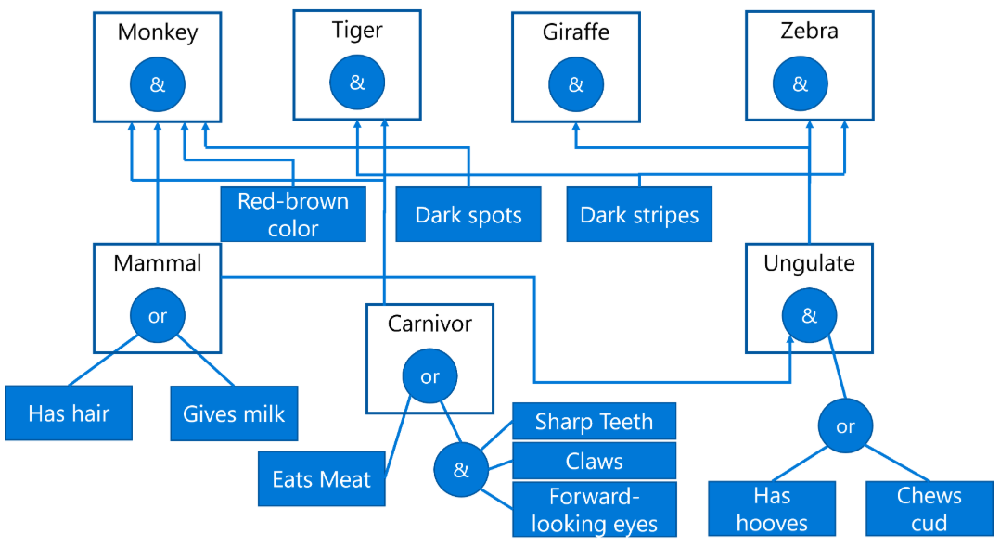

带有逆向推理的专家系统外壳
让我们尝试定义一个基于产生规则的简单知识表示语言。我们将使用 Python 类作为关键字来定义规则。基本上将有三种类型的类：
Ask表示需要向用户提出的问题。它包含可能的答案集合。 If表示一个规则，它只是存储规则内容的语法糖 AND/ OR是表示树的 AND/OR 分支的类。它们只存储内部的参数列表。为简化代码，所有功能都定义在父类Content中。
class Ask():def __init__(self,choices=['y','n']):self.choices = choicesdef ask(self):if max([len(x) for x in self.choices])>1:for i,x in enumerate(self.choices):print("{0}. {1}".format(i,x),flush=True)x = int(input())return self.choices[x]else:print("/".join(self.choices),flush=True)return input()class Content():def __init__(self,x):self.x=xclass If(Content):passclass AND(Content):passclass OR(Content):pass
Ask。rules = {'default': Ask(['y','n']),'color' : Ask(['red-brown','black and white','other']),'pattern' : Ask(['dark stripes','dark spots']),'mammal': If(OR(['hair','gives milk'])),'carnivor': If(OR([AND(['sharp teeth','claws','forward-looking eyes']),'eats meat'])),'ungulate': If(['mammal',OR(['has hooves','chews cud'])]),'bird': If(OR(['feathers',AND(['flies','lies eggs'])])),'animal:monkey' : If(['mammal','carnivor','color:red-brown','pattern:dark spots']),'animal:tiger' : If(['mammal','carnivor','color:red-brown','pattern:dark stripes']),'animal:giraffe' : If(['ungulate','long neck','long legs','pattern:dark spots']),'animal:zebra' : If(['ungulate','pattern:dark stripes']),'animal:ostrich' : If(['bird','long nech','color:black and white','cannot fly']),'animal:pinguin' : If(['bird','swims','color:black and white','cannot fly']),'animal:albatross' : If(['bird','flies well'])}
为了执行向后推理，我们将定义 Knowledgebase 类。它将包含：
工作的 memory—— 一个将属性映射到值的字典知识库中的 rules，格式如上文所定义
两个主要方法是：
get用于获取属性的值，必要时执行推理。例如， get('color')会获取颜色槽的值（如有必要会询问，并将值存储以备后续使用在工作内存中）。如果我们调用get('color:blue')，它会询问颜色，然后根据颜色返回y/n值。eval执行实际推理，即遍历 AND/OR 树，评估子目标等。
class KnowledgeBase():def __init__(self,rules):self.rules = rulesself.memory = {}def get(self,name):if ':' in name:k,v = name.split(':')vv = self.get(k)return 'y' if v==vv else 'n'if name in self.memory.keys():return self.memory[name]for fld in self.rules.keys():if fld==name or fld.startswith(name+":"):# print(" + proving {}".format(fld))value = 'y' if fld==name else fld.split(':')[1]res = self.eval(self.rules[fld],field=name)if res!='y' and res!='n' and value=='y':self.memory[name] = resreturn resif res=='y':self.memory[name] = valuereturn value# field is not found, using defaultres = self.eval(self.rules['default'],field=name)self.memory[name]=resreturn resdef eval(self,expr,field=None):# print(" + eval {}".format(expr))if isinstance(expr,Ask):print(field)return expr.ask()elif isinstance(expr,If):return self.eval(expr.x)elif isinstance(expr,AND) or isinstance(expr,list):expr = expr.x if isinstance(expr,AND) else exprfor x in expr:if self.eval(x)=='n':return 'n'return 'y'elif isinstance(expr,OR):for x in expr.x:if self.eval(x)=='y':return 'y'return 'n'elif isinstance(expr,str):return self.get(expr)else:print("Unknown expr: {}".format(expr))
y/n 来回答是非题，或者通过指定数字（0..N）来回答具有多个选项的题目。kb = KnowledgeBase(rules)kb.get('animal')
hairy/nsharp teethy/nclawsy/nforward-looking eyesy/ncolor0. red-brown1. black and white2. otherhas hoovesy/nlong necky/nlong legsy/npattern0. dark stripes1. dark spots'giraffe'
使用 Experta 进行正向推理
在下一个示例中，我们将尝试使用用于知识表示的库之一 Experta 实现正向推理。Experta 是一个用于在 Python 中创建正向推理系统的库，其设计类似于经典的旧系统 CLIPS。
我们本来也可以自己实现正向链式推理而不会有太大问题，但简单的实现通常效率不高。为了更有效地进行规则匹配，使用了一种特殊算法 Rete。
import sys!{sys.executable} -m pip install git+https://github.com/nilp0inter/experta
Collecting git+https://github.com/nilp0inter/expertaCloning https://github.com/nilp0inter/experta to /tmp/pip-req-build-7qurtwk3Running command git clone --filter=blob:none --quiet https://github.com/nilp0inter/experta /tmp/pip-req-build-7qurtwk3Resolved https://github.com/nilp0inter/experta to commit c6d5834b123861f5ae09e7d07027dc98bec58741Installing build dependencies ... doneGetting requirements to build wheel ... donePreparing metadata (pyproject.toml) ... doneRequirement already satisfied: frozendict~=2.4.6 in /opt/conda/envs/ai4beg/lib/python3.12/site-packages (from experta==1.9.5.dev1) (2.4.7)Collecting schema~=0.6.7 (from experta==1.9.5.dev1)Downloading schema-0.6.8-py2.py3-none-any.whl.metadata (14 kB)Downloading schema-0.6.8-py2.py3-none-any.whl (14 kB)Building wheels for collected packages: expertaBuilding wheel for experta (pyproject.toml) ... doneCreated wheel for experta: filename=experta-1.9.5.dev1-py3-none-any.whl size=34804 sha256=888c459512a5e713f4b674caa9a0f96cfdf07ec0d6eb56cc318ce0653d218014Stored in directory: /tmp/pip-ephem-wheel-cache-1eeii9zy/wheels/3d/e8/bb/22d7956359603fa8dd679aa09f5b8efb3f29991c3986fdc787Successfully built expertaInstalling collected packages: schema, experta━━━━━━━━━━━━━━━━━━━━━━━━━━━━━━━━━━━━━━━━ 2/2 [experta]Successfully installed experta-1.9.5.dev1 schema-0.6.8
from experta import *#import experta
KnowledgeEngine 的类。每条规则由一个带有 @Rule 注解的单独函数定义，该注解指定规则何时触发。在规则内部，我们可以使用 declare 函数添加新的事实，添加这些事实将导致前向推理引擎调用更多规则。class Animals(KnowledgeEngine):@Rule(OR(AND(Fact('sharp teeth'),Fact('claws'),Fact('forward looking eyes')),Fact('eats meat')))def cornivor(self):self.declare(Fact('carnivor'))@Rule(OR(Fact('hair'),Fact('gives milk')))def mammal(self):self.declare(Fact('mammal'))@Rule(Fact('mammal'),OR(Fact('has hooves'),Fact('chews cud')))def hooves(self):self.declare('ungulate')@Rule(OR(Fact('feathers'),AND(Fact('flies'),Fact('lays eggs'))))def bird(self):self.declare('bird')@Rule(Fact('mammal'),Fact('carnivor'),Fact(color='red-brown'),Fact(pattern='dark spots'))def monkey(self):self.declare(Fact(animal='monkey'))@Rule(Fact('mammal'),Fact('carnivor'),Fact(color='red-brown'),Fact(pattern='dark stripes'))def tiger(self):self.declare(Fact(animal='tiger'))@Rule(Fact('ungulate'),Fact('long neck'),Fact('long legs'),Fact(pattern='dark spots'))def giraffe(self):self.declare(Fact(animal='giraffe'))@Rule(Fact('ungulate'),Fact(pattern='dark stripes'))def zebra(self):self.declare(Fact(animal='zebra'))@Rule(Fact('bird'),Fact('long neck'),Fact('cannot fly'),Fact(color='black and white'))def straus(self):self.declare(Fact(animal='ostrich'))@Rule(Fact('bird'),Fact('swims'),Fact('cannot fly'),Fact(color='black and white'))def pinguin(self):self.declare(Fact(animal='pinguin'))@Rule(Fact('bird'),Fact('flies well'))def albatros(self):self.declare(Fact(animal='albatross'))@Rule(Fact(animal=MATCH.a))def print_result(self,a):print('Animal is {}'.format(a))def factz(self,l):for x in l:self.declare(x)
run() 方法来执行推理。结果你可以看到，新的推断事实被添加到工作内存中，包括关于动物的最终事实（如果我们正确设置了所有初始事实）。ex1 = Animals()ex1.reset()ex1.factz([Fact(color='red-brown'),Fact(pattern='dark stripes'),Fact('sharp teeth'),Fact('claws'),Fact('forward looking eyes'),Fact('gives milk')])ex1.run()ex1.facts
Animal is tigerFactList([(0, InitialFact()),(1, Fact(color='red-brown')),(2, Fact(pattern='dark stripes')),(3, Fact('sharp teeth')),(4, Fact('claws')),(5, Fact('forward looking eyes')),(6, Fact('gives milk')),(7, Fact('mammal')),(8, Fact('carnivor')),(9, Fact(animal='tiger'))])